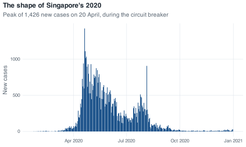

Working with epidemiological data, using Singapore’s 2020 COVID-19 record
A hands-on introduction to R and the tidyverse for public health students, built around a single real dataset: every day of Singapore’s 2020 COVID-19 epidemic. Written for SPH5421 at the NUS Saw Swee Hock School of Public Health.
Author
Swapnil Mishra
Published
29 July 2026
Welcome
This book covers getting an answer out of a dataset, and it is written for people who have never programmed. It is the week-one material for SPH5421, Fundamentals of Infectious Disease Modelling, at the NUS Saw Swee Hock School of Public Health.
The outputs on these pages, including the plots, the warnings and the place where R prints NaN instead of a number, were produced by running the code shown directly above them. If a number in the prose disagrees with the number in the output block, the prose is wrong; please report it.
Who this is for
The intended reader is a public health masters student who has used Stata or SPSS through a menu, or who has done their analysis in a spreadsheet and found it difficult to keep track of at a few thousand rows. No programming background is assumed; familiarity with a mean and a median, and a rough idea of what an epidemic curve is, are enough.
By the time you reach the end you should be able to read a CSV into R and form a view about whether to trust it; turn cumulative counts into daily ones without silently losing the first day; find missing values, work out why they are missing, and decide what to do rather than letting R decide for you; group a dataset by month and summarise it; build a figure suitable for a report; and write a small function so that the same calculation done six times is written once. The last chapter asks you to produce a monthly situation report from the raw file, with no scaffolding.
The book also spends time on reading error messages, which is a skill separate from the syntax and is treated as such throughout.
The data
A single dataset runs through the whole book: Singapore’s 2020 COVID-19 record, 345 daily rows from 22 January to 31 December 2020, with 13 columns. These cover cumulative confirmed cases and deaths, the three Oxford government-response indices, and the six Google Community Mobility series. The record ends with 58,599 confirmed cases and 29 recorded deaths.
It combines three sources: the COVID-19 Data Hub R package (Guidotti & Ardia, 2020), the Oxford COVID-19 Government Response Tracker (Hale et al., 2021) and Google’s COVID-19 Community Mobility Reports; Appendix B — The data gives the full citations. For Singapore, the Hub’s figures draw in turn on the Ministry of Health’s daily reporting. Appendix B documents every column, including where it is missing and why. The CSV file itself can be downloaded directly at https://raw.githubusercontent.com/CERM-NUS/r-intro/main/data/sg_covid_data.csv.
It was chosen because it is small enough to inspect in full and because it has the ordinary defects. The death column has 59 leading missing values, and when it does start it starts at 2 rather than at 1, so the obvious way of turning it into daily deaths recovers 27 of the 29. Every mobility column is missing its first 24 days, because Google’s baseline period had not finished when the series begins. The case counts are cumulative, so a plot of the raw column rises monotonically and shows little about when incidence was high. And there is a day in August with 908 cases in a month whose median is 91, which is a reporting artefact rather than a wave. Each of these appears later as a worked example.
The code below is the sort of thing you will be writing by the end of Part IV; none of it needs to make sense yet.
covid<-read_covid()covid%>%arrange(date)%>%mutate(daily_cases =confirmed-lag(confirmed, default =0))%>%ggplot(aes(x =date, y =daily_cases))+geom_col()+labs( title ="The shape of Singapore's 2020", subtitle ="Peak of 1,426 new cases on 20 April, during the circuit breaker", x =NULL, y ="New cases")

New confirmed cases per day, computed from the cumulative column in the raw file. The single tall bar in August is the 908-case reporting day, not a second wave.
read_covid() is a shortcut defined in the book’s setup file so that every chapter starts from the same place. The import chapter unwraps it and shows you the read_csv() call inside.
Exercises, hints and solutions
Exercises sit inside the chapters, near the material they exercise. Each states a goal in words and leaves the structure of the answer to you, so deciding how to build the answer is part of the work.
Under most exercises there is a collapsed hint, which names the function or approach to reach for. Under that is a link to the worked solution in Appendix A. The solutions are complete and commented, and each is one click away. Attempting the exercise first is more useful than reading the solution first, but the choice is yours.
SPH5421 students: where to stop
For the live session, work Parts I to IV: everything up to and including Showing it to someone. That is the material the rest of the module builds on.
The whole book takes roughly five and a half hours if you type the code rather than skim it. Parts V and VI, on writing your own functions and the capstone, are for the week after, or for when you meet a problem that needs them. You are not expected to arrive having finished the book.
How to use this book
Type the code rather than pasting it. Typing makes the structure visible: that aes() sits inside ggplot() rather than next to it, for instance. It also produces your own typos in a setting where the correct version is on the screen above, so you meet the common error messages while their cause is still obvious. There is a copy button on every code block on this site, which is useful when you are re-running something for the fifth time.
Read error messages to the end. R’s errors usually run to two or three lines and the useful line is rarely the first. The tidyverse ones put the diagnosis under a bullet several lines down, along with a suggestion for what to do about it. When you search for a message, paste it in exactly as R printed it, but delete your own object and file names first, since those appear nowhere outside your own session.
Run everything as you read. When a chunk produces something, look at it before scrolling on, then change one thing and run it again: change the 100 to 50, swap mean for median, or remove the na.rm = TRUE and see what changes. Every chunk can be re-run from the top of its chapter, so an experiment that fails costs nothing.
Chapters render in separate R sessions and each one is self-contained, so you can restart R at any point and pick up at the top of a chapter.
Corrections
Every page has an “Edit this page” link that goes to its source on GitHub, and there is an issue tracker. A wrong number in a teaching resource propagates into every analysis built on it, so corrections are welcome, however small.
Acknowledgement
Written by Swapnil Mishra, working with Claude Code (Anthropic, Opus 5 model), which helped draft the text, convert the original base-R worksheet to the tidyverse, and check the numbers against the data. A later revision — the reorganisation of the sources, the restructuring of the good-practice material, and the language passes across the chapters — was made with Kimi Code (Moonshot AI, K3 model). Responsibility for the final text rests with the author.